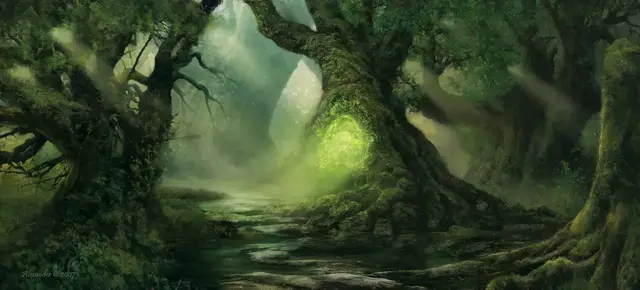

Путешествие через растения
Transport Via Plants
6 уровень, Вызов

Время сотворения 1 действие
Дистанция 10 футов
Компоненты В, С
Длительность 1 раунд
Классы Друид
Это заклинание создаёт магическую связь между неоживлённым растением с размером не меньше Большого, находящимся в пределах дистанции, и другим растением, находящимся на любом расстоянии на том же плане существования. Вы должны до этого хотя бы раз видеть или касаться растения, служащего местом назначения. Пока заклинание активно, все существа могут входить в целевое растение и выходить из растения, служащего местом назначения, использовав всего 5 футов перемещения.